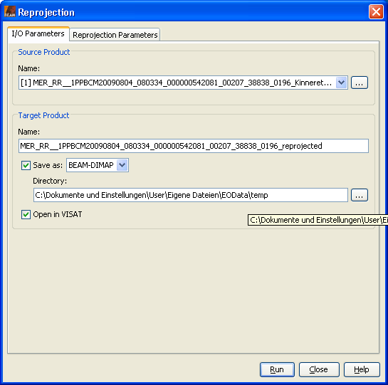
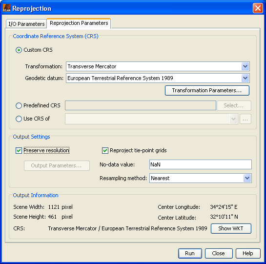

| Reprojection |
|
Here the use can create new product with a projected Coordinate Reference System (CRS). If you want that the created product is also orthorectified use the Orthorectification command. If its your intention to create one product from multiple input products use the Mosaic Processor.
After the new product has been created, you can change to VISAT's Product Browser in order to open an Image View for a band of the new product.
Source ProductName: Here the user specifies the name of the source product. The combo box presents a list of all products open in VISAT. The user may select one of these or, by clicking on the button next to the combo box, choose a product from the file system. Target ProductName: Used to specify the name of the target product. Save as: Used to specify whether the target product should be saved to the file system. The combo box presents a list of file formats, currently BEAM-DIMAP, GeoTIFF, and HDF5. The text field allows to specify a target directory. Open in VISAT: Used to specify whether the target product should be opened in VISAT. When the the target product is not saved, it is opened in VISAT automatically. |
 |
Coordinate Reference System (CRS)Custom CRS: The transformation used by the projection can be selected. Also the geodetic datum and transformation parameters can be set, if possible for the selected transformation. Predefined CRS: By clicking on the Select... button a new Select Coordinate Reference System dialog is shown where a predefined CRS can be selected. Use CRS of: A product can be selected to use its projected Coordinate Reference System. This will have the effect that source product will cover the same geographic region on the same CRS. Which means that both products are collocated. Output SettingsPreserve resolution: If unchecked the Output Parameters... is enabled and the upcoming Output Parameters dialog lets you edit the output parameters like easting and northing of the reference pixel, the pixel size and the scene height and width. Reproject tie-point grids: Specifies whether or not the tie-point grids shall be included. If they are reprojected they will appear as bands in the target product and not any more as tie-point grids. Add delta lat/lon bands: Specifies whether or not delta latitude and longitude bands will be added to the target product. These are virtual bands, which can be used to assess the accuracy of the new geo-coding given by the Coordinate Reference System (CRS) with respect to the old geo-coding. No-data value: The default no-data value is used for output pixels in the projected band which have either no corresponding pixel in the source product or the source pixel is invalid.
Resampling Method:
You can select one resampling method for the projection. Output Information
Displays some information about the output, like scene width and height, the geographic coordinate of
the scene center and short description of the selected CRS. |
 |